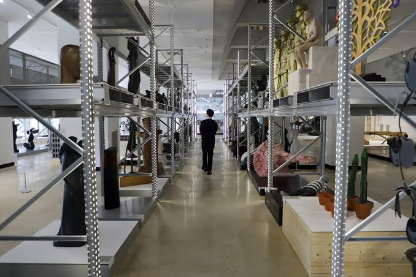
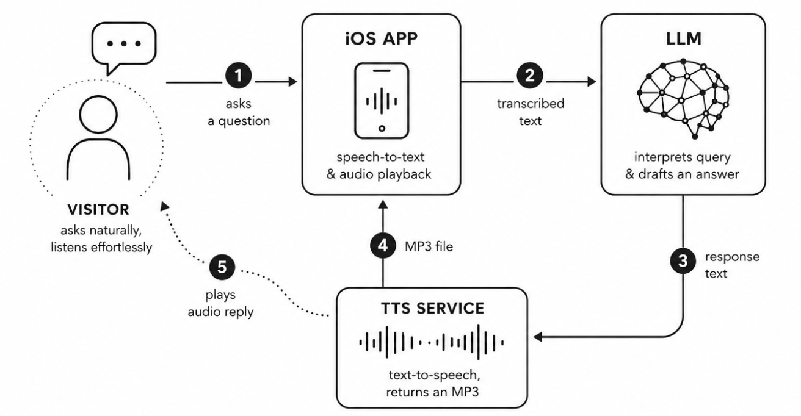
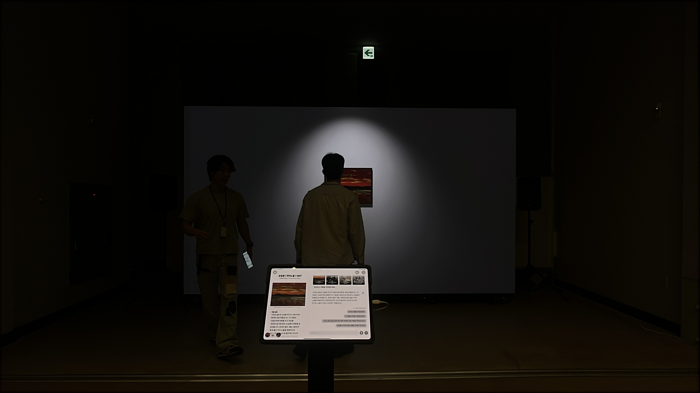

AI가 답하는 것이 아니라, 사용자가 질문할 수 있도록 설계하다.
Designing not for AI to answer, but for users to be able to ask.
국립현대미술관(MMCA)은 약 9,000점 이상의 소장품을 보유하고 있습니다. 그러나 대부분의 관람객은 작품에 대한 배경지식이 부족해 "이 작품은 뭐예요?" 정도의 질문에서 대화가 끝나는 경우가 많았습니다. AI 챗봇이 존재하더라도, 사용자가 무엇을 물어봐야 할지 모른다면 인터랙션은 더 이상 이어지지 않습니다. StorageChat Collection은 이 문제를 단순히 LLM의 성능이 아니라 질문을 유도하는 인터랙션 디자인의 문제로 바라보고 설계되었습니다. 좋은 대화는 좋은 답변보다 좋은 질문에서 시작되기 때문입니다.
The National Museum of Modern and Contemporary Art, Korea (MMCA) holds more than 9,000 artworks. But most visitors lack background knowledge on the works, so conversations often ended at a question as basic as "what is this?" Even with an AI chatbot in place, the interaction goes no further if the user doesn't know what to ask. StorageChat Collection is designed around treating this less as a question of LLM performance and more as a problem of interaction design, one built to guide people toward asking. A good conversation starts from a good question more than a good answer.
국립현대미술관 개방형 수장고에는 9천여 점의 소장품이 있습니다. 특히 미술에 배경지식이 없는 관람객이라면, 무엇부터 어떻게 봐야 할지 막막해지기 쉽습니다.
The open storage at the National Museum of Modern and Contemporary Art, Korea (MMCA) holds more than 9,000 artworks. For visitors without a background in art especially, it's easy to feel lost on where or how to even begin.

AI Data Engineer / Interaction Designer
AI Data Engineer / Interaction Designer
사람들이 질문할 수 있도록 만드는 데이터
Data that lets people ask questions
관람객은 미디어 월과 아이패드, 두 하드웨어를 동시에 봐야 했습니다. 그래서 이 둘 사이의 시선 이동이 자연스럽게 이루어지도록 인터랙션을 설계했습니다. 관람객은 아이패드로 질문을 입력하지만, 정작 봐야 할 작품과 답변은 앞쪽의 큰 디스플레이에 있었습니다. 입력이 끝나면 아이패드 화면에 앞을 봐 달라는 문구가 뜨도록 만들어, 시선이 자연스럽게 다시 큰 화면으로 향하게 만들었습니다.
Visitors had to look at both the media wall and the iPad at once, so I designed the interaction so their gaze could move naturally between the two devices. Visitors typed their questions on the iPad, but the artwork and the answer lived on the large display up front. Once input was done, a prompt on the iPad asked them to look up, sending their gaze back to the screen automatically.
질문은 음성과 텍스트로 모두 입력할 수 있게 만들었습니다. 답변에도 평범한 말투와 아동용 말투 두 버전을 따로 만들었는데, 쉬운 말투가 낯선 내용에 다가가는 문턱을 낮춰준다고 생각했기 때문입니다.
Visitors could ask questions by both voice and text. Answers came in two tones, a child-friendly version and a plain, everyday one, since an easier tone lowers the barrier to unfamiliar content.
작품마다 단순히 "이 작가의 다른 작품"을 추천하는 방식은 사용자의 호기심을 오래 유지하지 못했습니다. 그래서 저는 하나의 작품에서 여러 방향으로 대화를 확장할 수 있도록 추천 질문 데이터를 직접 설계했습니다. 추천 질문은 다음과 같은 다양한 관점에서 구성했습니다.
Simply recommending "other works by this artist" for every piece didn't hold a visitor's curiosity for long. So I designed the recommended-question data myself, so that a conversation could branch out from a single artwork in several directions. The recommended questions were built around a range of perspectives:
즉, 작품 하나가 다양한 이야기의 출발점이 되도록 데이터를 구조화했습니다.
In other words, the data was structured so that a single artwork could become the starting point for many different stories.
1
작품마다 질문하기 어려우니, 동시대 작품·재료·작가 정보에 대한 예시 질문을 미리 만들어 자동으로 보여줍니다.
1
Since it's hard to know what to ask about each work, example questions about contemporaneous works, materials, and artist information are pre-made and shown automatically.
2
답변에는 TTS 음성 안내가 함께 제공됩니다.
2
TTS voice guidance is provided alongside the answer.
3
질문에 맞는 관련 이미지와 추천 작품이 자동으로 큐레이션되어, 계속해서 다음 질문을 던지고 컬렉션을 더 탐색하도록 유도합니다.
3
Related images and recommended artworks are automatically curated to match the question, encouraging visitors to keep asking and explore more of the collection.
특히 한국 현대미술은 해외 모델들이 참고할 수 있는 공개 Glossary가 거의 존재하지 않았습니다. LLM이 작품을 잘 이해하도록 하기 위해 한국 현대미술 용어와 개념을 직접 조사하고 정리하여 데이터셋을 구축했습니다. 이를 통해 작품의 맥락을 보다 정확하게 이해하고, Hallucination이나 잘못된 해석을 최소화할 수 있도록 Retrieval 데이터를 설계했습니다.
Korean contemporary art in particular had almost no public glossary that overseas models could draw on. To help the LLM understand the works properly, I researched and organized Korean contemporary art terms and concepts myself and built a dataset from them. This let me design retrieval data that could grasp a work's context more accurately, while minimizing hallucination and misreadings.

사용자가 iPad에서 질문하면, LLM이 작품 데이터를 검색하고, TTS가 답변을 생성하며, 동시에 미디어 월(Media Wall)이 해당 콘텐츠와 연동되어 반응하도록 전체 시스템을 구현했습니다. 대화형 음성 안내 파이프라인. 관람객이 iOS 앱으로 질문하면 LLM이 응답을 만들고, TTS가 이를 음성으로 변환해 다시 관람객에게 들려줍니다.
When a user asks a question on the iPad, the LLM searches the artwork data, TTS generates the answer, and at the same time, the Media Wall reacts and syncs with that content. I implemented the entire system to work this way. Conversational voice-guide pipeline. A visitor asks a question through the iOS app, the LLM drafts a response, and TTS converts it to speech that plays back to the visitor.
저는 이 과정에서 iPad Interface · LLM · TTS Service · Media Wall 사이의 통신 및 네트워크를 설계하고 구현했으며, Front-end와 Back-end 개발에도 함께 참여했습니다.
Across this process, I designed and implemented the communication and networking between the iPad Interface, LLM, TTS Service, and Media Wall, and also took part in both front-end and back-end development.
우리 연구팀은 전시 횟수나 인기순이 아니라 미술관 학예사가 선정한 주요 작품 목록을 기준으로 추천 우선순위를 설계해, 미술관의 큐레이션 의도를 인터랙션에도 반영했습니다.
Our research team designed recommendation priority around the museum curators' list of key works rather than exhibition count or popularity, carrying the museum's own curatorial intent into the interaction.
국립현대미술관 청주에서 'Xplore Museum' 프로그램의 일환으로, 2025년 9월부터 11월까지 10주간 111명의 관람객을 대상으로 시연을 진행했습니다. 참여자들은 하나의 질문에서 멈추지 않고 스스로 다음 질문을 이어갔고, 평균 만족도 100점 만점에 약 85점을 받았습니다.
This project was demonstrated with 111 visitors at the National Museum of Modern and Contemporary Art, Korea (MMCA), Cheongju, as part of the "Xplore Museum" program, over 10 weeks from September to November 2025. Participants didn't stop at a single question, and the project earned an average satisfaction score of about 85 out of 100.

회고Reflection
많은 AI 프로젝트는 얼마나 똑똑하게 답하는가에 집중합니다. 하지만 이 프로젝트를 통해 저는 더 중요한 질문을 하게 되었습니다. "사용자는 무엇을 질문해야 하는지 알고 있는가?"
Many AI projects focus on how cleverly they can answer. But through this project, I came to ask a more important question instead. "Does the user know what to ask?"
좋은 AI 경험은 더 좋은 답변보다, 사람들이 자연스럽게 질문을 이어갈 수 있는 구조를 설계하는 것에서 시작된다고 생각합니다. 그래서 저는 AI 모델보다 먼저, 데이터를 어떻게 연결하고 질문을 어떻게 디자인할 것인지에 집중했습니다.
I believe a good AI experience starts less from a better answer and more from designing a structure that lets people naturally keep asking questions. So before the AI model itself, I focused on how to connect the data and how to design the questions.
Press
StorageChat Collection은 국립현대미술관이 서강대학교 아트&테크놀로지학과 우리 R&D팀과 함께 진행한 프로젝트로, 문화체육관광부(MCST)와 한국콘텐츠진흥원(KOCCA)이 지원하는 2025년 문화기술(CT) 연구개발 과제 '실물-가상 연계형 디지털 개방형 수장고 및 소장품 통합 보존관리 시스템 개발'의 일환으로 수행되었습니다. StorageChat Collection is a project conducted by the National Museum of Modern and Contemporary Art, Korea (MMCA) together with our R&D team from Sogang University's Department of Art & Technology, as part of the 2025 Culture Technology (CT) R&D Project, "Development of a Real-Virtual Linked Digital Open Storage and Integrated Conservation Management System for Collections," supported by the Ministry of Culture, Sports and Tourism (MCST) and the Korea Creative Content Agency (KOCCA).